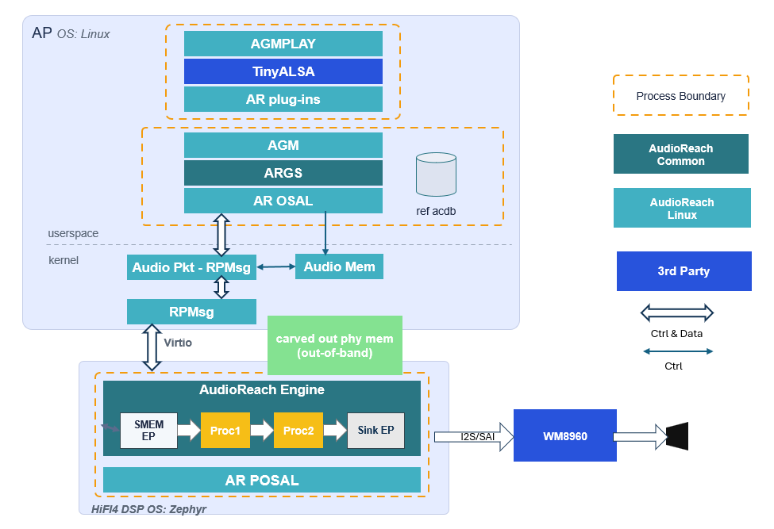
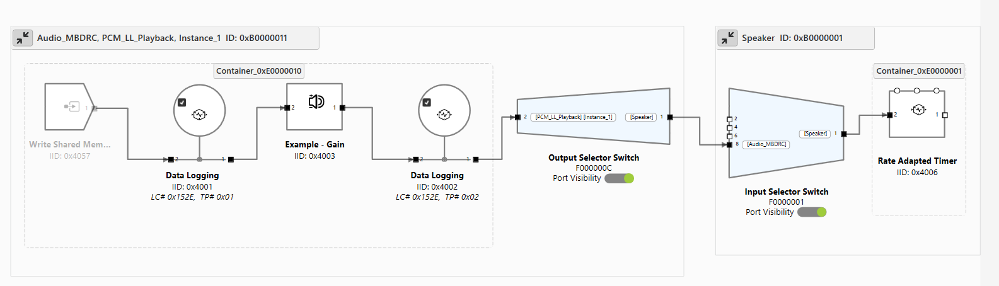

NXP IMX8M Plus
This guide provides an AudioReach architecture overview on the NXP IMX8M Plus platform and walks through the steps to create a Yocto image that integrates AudioReach, create a Zephyr image for the HiFi ADSP, set up the device, and run an AudioReach usecase.
Architecture Overview
{kind=link}

The above architecture diagram illustrates the simulated playback usecase on the NXP IMX8M Plus using AudioReach. The platform has a heterogeneous multi-processor design: the AudioReach Engine (ARE) runs on the HiFi ADSP under Zephyr OS, while the rest of the AudioReach stack — AudioReach Graph Services (ARGS), Audio Graph Manager (AGM), and the ACDB — runs on the APPS processor under Linux.
When a graph open request is received by ARGS from the client (agmplay), ARGS retrieves the
audio graph and calibration data from the Audio Calibration Database (ACDB) using the usecase
handle and calibration handle. It then provides the graph definition and calibration data to ARE
on the ADSP via the Generic Packet Router (GPR) protocol.
GPR messages are transported across the two processors using the RPMsg framework, which is built on top of Virtio rings (vrings) over shared memory. The control path (graph open, close, and parameter set commands) uses GPR over RPMsg, while audio data is exchanged between the APPS processor and the ADSP through a shared memory region mapped to both processors.
Upon receiving the graph definition, ARE on the ADSP forms an audio processing graph. In the current simulated playback usecase, the Rate-Adapted Timer module periodically signals the APPS processor to feed more data into the pipeline. There is not yet a hardware endpoint module for the NXP board, so no audio is rendered to a physical output device. The endpoint module is currently in development.
The graph topology can be visualized in real time during an active usecase using the PC-based GUI tool AudioReach Creator (ARC, also known as QACT).
{kind=link}

The above diagram shows the usecase graph currently enabled for the NXP IMX8M Plus.
Step 1: Create a Yocto Image
To create a Yocto image, follow the guide at the official NXP GitHub page. AudioReach currently supports the scarthgap version of Yocto on NXP board.
Note
If there is an error in the repo init step, append the following flags to the repo init command:
--no-repo-verify --repo-url=http://android.googlesource.com/tools/repo
For the IMX 8M Plus, use the following setup command to create the build folder.
Run this from the directory that will serve as <yocto_build_root> — the root
directory containing the sources/ and build/ folders:
MACHINE=imx8mpevk DISTRO=fsl-imx-wayland source ./imx-setup-release.sh -b ./build
Once the build is synced and the setup is complete, run the following command to generate the full build:
bitbake imx-image-multimedia
Note
If the bitbake command gives a umask error, run umask 022 and try again.
Integrate AudioReach Components
Navigate to <yocto_build_root>/sources and clone the meta-audioreach repository:
git clone https://github.com/AudioReach/meta-audioreach.git -b scarthgap
Open <yocto_build_root>/build/conf/bblayers.conf and append the following line under the
BBLAYERS ?= " \ section to integrate the AudioReach meta layer:
<yocto_build_root>/sources/meta-audioreach \
Open <yocto_build_root>/build/conf/local.conf and append the following lines to include the
AudioReach components in the full Yocto build:
IMAGE_INSTALL:append = "audioreach-graphservices tinyalsa audioreach-graphmgr audioreach-conf audioreach-kernel"
PACKAGECONFIG:pn-audioreach-graphmgr = "use_default_acdb_path"
EXTRA_OECONF:append:pn-audioreach-conf = " --with-nxp"
Once the configuration is complete, run the following command to generate the full build with the integrated AudioReach components:
bitbake imx-image-multimedia
Step 2: Create a Zephyr Image
This step produces a Zephyr firmware image with the AudioReach Engine (ARE) integrated as the
DSP component running on the HiFi ADSP. ARE is added to the Zephyr build as a west module,
registered in the workspace manifest and built as part of the Zephyr build system.
The zephyr/module.yml file in the audioreach-engine repository declares it as a
Zephyr module, exposing its Kconfig options and CMake build targets to the Zephyr build
system.
The audioreach-engine module provides the core Signal Processing Framework (SPF), the
Platform & Operating System Abstraction Layer (POSAL), and the Generic Packet Router (GPR) as
Zephyr-compatible libraries. A sample Zephyr application under audioreach-engine/app/
demonstrates the use of the module. This application initializes the three core components
— POSAL, GPR, and the ARE framework — and serves as the entry point for the Zephyr
firmware image that runs on the ADSP.
The steps below cover installing dependencies, setting up the west workspace, applying patches, and building the image.
Install Dependencies
Before setting up the workspace, install the required dependencies. Follow the relevant sections of the Zephyr getting started guide for your operating system:
Host Tool Dependencies
Follow the Install dependencies section of the Zephyr getting started guide to install the required host tools (CMake, Python, DTC) for your OS.
Python Dependencies and West
Follow the Get Zephyr and install Python dependencies
section of the Zephyr getting started guide to set up a Python virtual environment and install
west.
Note
Activate the virtual environment every time you start working:
source ~/zephyrproject/.venv/bin/activate
Zephyr SDK
Install the Zephyr SDK version 0.17.0, which is compatible with the Zephyr version used by AudioReach. Refer to the Install the Zephyr SDK section of the Zephyr getting started guide, and use the following command to install the specific version:
west sdk install --version 0.17.0
Note
Use west sdk install --help to see additional options such as specifying the installation
destination or selecting specific architecture toolchains.
Setup the West Workspace
Create a directory to serve as the west workspace root and clone the audioreach-engine
repository into it:
mkdir <workspace_dir> && cd <workspace_dir>
git clone https://github.com/AudioReach/audioreach-engine.git
The audioreach-engine repository contains a west.yml manifest file located under the
zephyr/ subdirectory (zephyr/west.yml). This manifest defines all required dependencies,
including the Zephyr RTOS. When west update is run, west fetches all projects defined in
the manifest — including the Zephyr RTOS itself — as subdirectories of <workspace_dir>.
Initialize the west workspace using the cloned repository as the manifest source:
west init -l ./audioreach-engine/ --mf zephyr/west.yml
Then fetch all projects defined in the manifest, including Zephyr:
west update
Apply Patches
After running west init and west update, apply the required patches to the workspace:
west patch apply
To undo the patches and reset the workspace to the pinned state (e.g., reset zephyr/ to the
pinned commit):
west patch clean
Build the Zephyr Image
To build the Zephyr image for the NXP IMX8M Plus ADSP target, run the following command:
west build -p always --build-dir <build_dir_path> -b imx8mp_evk/mimx8ml8/adsp ./audioreach-engine/app
The parameters used in the command are described below:
-p always— Enables a pristine build, cleaning the build directory before building to avoid stale artifacts from previous builds.--build-dir <build_dir_path>— Specifies the output directory for build artifacts. Replace<build_dir_path>with the desired path.-b imx8mp_evk/mimx8ml8/adsp— Specifies the target board.imx8mp_evkis the NXP IMX8M Plus Evaluation Kit,mimx8ml8is the SoC variant, andadspis the DSP core being targeted../audioreach-engine/app— The path to the AudioReach application source to be built.
Build Output
If the build is successful, the build artifacts are generated under the
<build_dir_path>/zephyr/ directory. The key output files are:
zephyr.elf— The compiled firmware image for the DSP. This is the file loaded onto the NXP board via remoteproc to start the AudioReach DSP component..config— The Kconfig configuration file generated during the build. This reflects all build-time options and enabled modules, and is useful for verifying the configuration used to produce the firmware.
Step 3: Setup the Device
Flash and Power On
Navigate to <yocto_build_root>/build/tmp/deploy/images/imx8mpevk and locate the file
imx-image-multimedia-imx8mpevk.rootfs.wic.zst. This is the full Yocto image generated in
Step 1.
Use Balena Etcher to flash this image onto a micro SD card. Once flashing is complete, insert the card into the NXP board.
Set the boot switches on the top left of the device to 0011 to select SD card boot. Connect
a serial cable to the serial port, connect the board to power, and push the PWR switch to
power on. For the location of the boot switches, serial port, and power connector on the board,
refer to the
Getting Started with the i.MX 8M Plus EVK.
Configure the Device Tree
While the board is powering on, the serial port will display a prompt to interrupt the boot. Press any key to interrupt, then run the following commands to set and persist the device tree:
=> editenv fdtfile
edit: imx8mp-evk-dsp.dtb
=> saveenv
=> boot
Note
saveenv writes the updated fdtfile variable to a dedicated environment partition on
the eMMC. This persists across reboots so the DSP device tree is selected automatically on
every boot without manual intervention. Note that running env default -a or re-flashing
the eMMC will reset the saved environment, requiring this step to be repeated.
Connect to the Network
Once the board is booted, connect it to the internet using Ethernet or WiFi.
Note
For WiFi setup instructions, refer to the NXP community guide for connecting to WiFi on i.MX8MP.
Push Files to the Device
Copy the zephyr.elf image generated in Step 2 and a .wav audio file to a location on
the device, such as /etc:
scp zephyr.elf root@<board_ip_address>:/etc/
scp <clip_name>.wav root@<board_ip_address>:/etc/
Step 4: Run an AudioReach Usecase
Start the DSP
Load the zephyr.elf firmware and start the AudioReach DSP using the remoteproc interface:
echo -n /etc/zephyr.elf > /sys/class/remoteproc/remoteproc0/firmware
echo start > /sys/class/remoteproc/remoteproc0/state
Note
To check the current DSP state, run
cat /sys/class/remoteproc/remoteproc0/state. To stop the DSP, run
echo stop > /sys/class/remoteproc/remoteproc0/state.
Enable Real-time Calibration Mode
ARC (AudioReach Creator) is a tool for creating and editing audio usecase graphs and editing audio configurations in real time during an active usecase. For more information on ARC, refer to the AudioReach Creator page.
Note
AudioReach Creator is only available on Windows at this time.
The steps below demonstrate how to connect ARC to the NXP board. Connecting to ARC is not required to run an AudioReach usecase.
On the NXP board:
Connect the NXP board to the internet using Ethernet or WiFi.
On the serial port or through SSH, run:
ats_gateway <IP address> 5558
Note
The DSP must be running before starting
ats_gateway. Refer to Start the DSP above if not already done.
On a local computer:
Install ARC (also known as QACT) on a Windows host machine using Steps to install ARC. QACT 8.1 or later is required.
Open ARC and click Connection configuration.
Add the NXP board as a device by entering
<IP address>:5558under the TCP/IP section.Refresh the Available Devices list. The IP address of the NXP board should appear.
Note
If the board does not appear, verify that the
ats_gatewaycommand is still running on the board.Select the entry and click Connect.
Start the Playback
Start the simulated playback using agmplay:
agmplay /<path_to_audio_file>/[clip_name].wav -D 100 -d 100 -i PCM_RT_PROXY-RX-2
Note
The -D 100 and -d 100 arguments specify the card index and device index
respectively. Card ID 100 identifies the AGM virtual sound card
(virtualsndcard) and device ID 100 refers to PCM100, the playback PCM
device. The -i PCM_RT_PROXY-RX-2 argument specifies the RT proxy backend device
(device ID 200). These IDs are defined for the NXP platform in
card-defs.xml
which is part of the audioreach-conf package installed on the device.
The playback is now running. If the NXP board is connected to ARC, the current usecase graph
will appear in the graph view. System logs for the usecase are saved to /var/log/syslog.